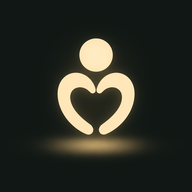

Crisis Lines for iPhone
Free crisis and mental health numbers for your county. Test it on your iPhone.
On a computer? Open this page on your iPhone. TestFlight installs onto the phone.
-
Get TestFlight
Apple’s free app for trying new apps. Already have it? Skip to step 2.
Get TestFlight -
Get Crisis Lines
After TestFlight is installed, tap here. It opens in TestFlight: tap Accept, then Install.
Get Crisis Lines
Apple shows a long page of instructions? TestFlight isn’t installed yet. Do step 1, then come back and tap step 2.
TestFlight asks for an invite code? Tap Redeem and type K8cKnfXc.
Something looks wrong or out of date? Tell whoever sent you this link, and which county.